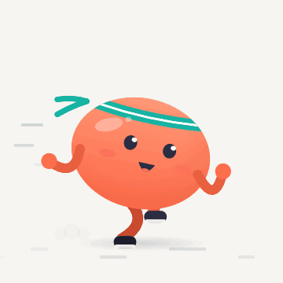
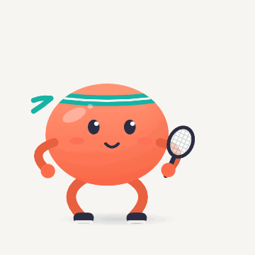
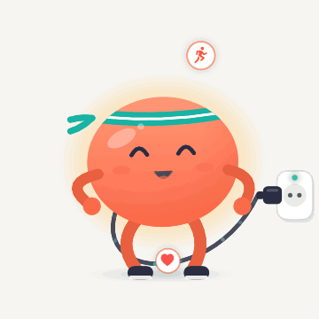
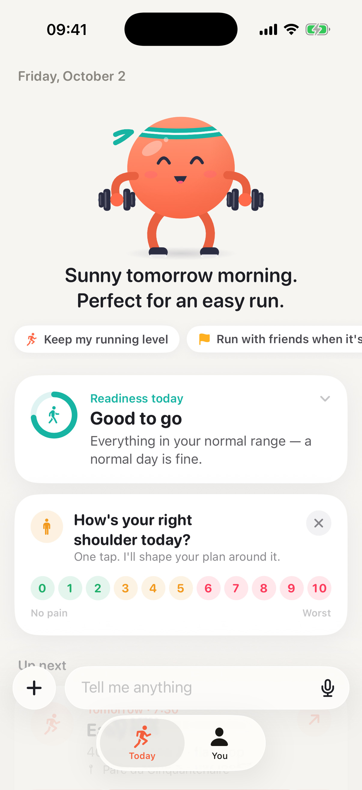
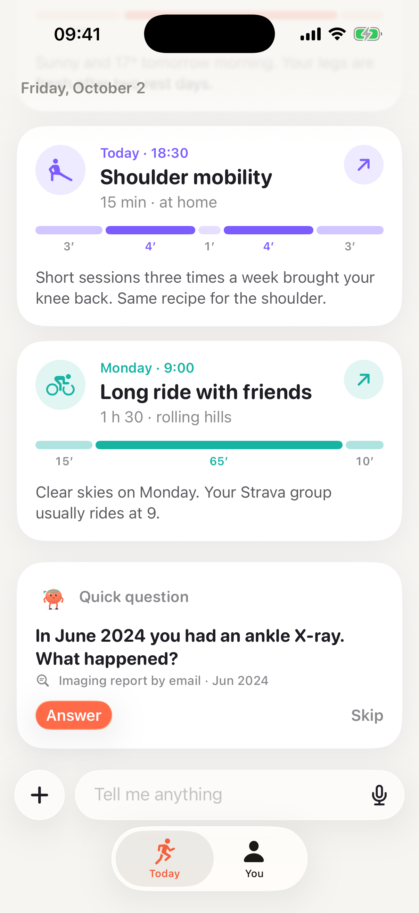
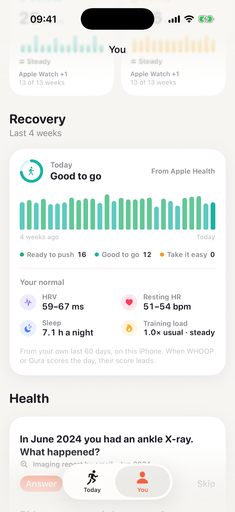
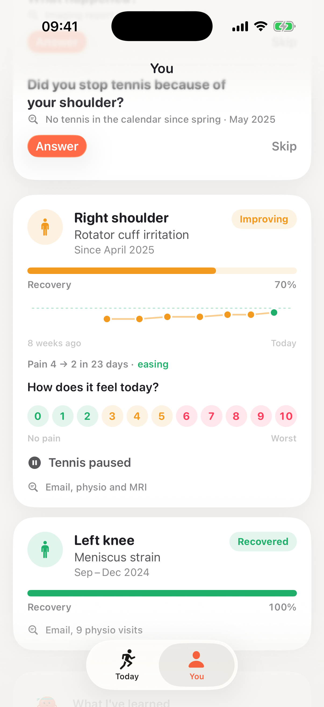
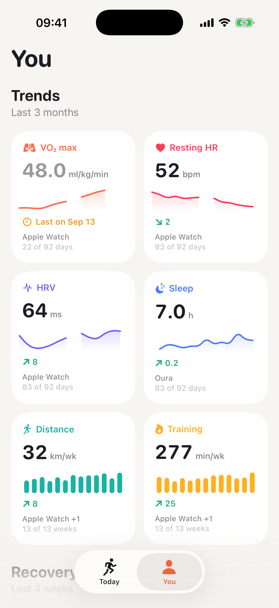
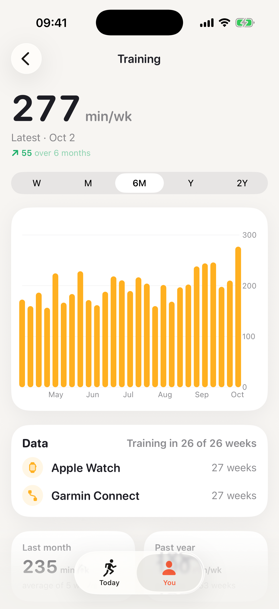

Bounce is an iPhone app, in testing, that reads a person’s sports and health history from the apps and devices they already use, and suggests only the next one to three sessions. There is no plan to pick and no form to fill in.
A round mascot does the sports. Claude does the reasoning.



Sources. The setup connects every source at once and reads them in parallel:
- Apple Health, including what the Apple Watch, Garmin, WHOOP and Oura write to it: workouts, heart rate, heart rate variability, sleep, VO₂ max.
- Strava: activities, their names, and who took part.
- Gmail: gym memberships, clubs, race entries, and care emails such as physio or imaging appointments.
- Google Calendar and the iPhone calendar: free time in the coming week, and past sport events.
- Location and weather: the city, the forecast, the places where workouts start, and gyms, pools and parks nearby.
- Everyday movement, the music played during workouts, and the photo library, where sports in photos are detected on the phone.
Each source has a page that says what it reads, why, and what Claude receives. Turning a source off disconnects it and deletes what it gave.
Merging. Sources overlap and disagree. The same run can be in Garmin, Apple Health and Strava, and two devices can report different sleep. The phone merges the data before Claude sees it:
- A session recorded several times counts once. Distance comes from the GPS device, heart rate from the record that has it, and the name and group size from Strava.
- Each metric follows one device, the one with the most recent data, never an average of several. The metric page compares the others and lets the person choose.
- An event in two calendars counts once.
- For health and goals, the person’s own words come first, then medical reports, then emails, then device data. Newer information replaces older. When a conflict changes the plan, the app asks.
Input. One input bar takes text, voice, photos, document scans and files: “I feel a bit sick since Sunday”, “the knee is fine again”, “I want to run with friends when it is sunny”. Speech is transcribed on the phone.


Today. One sentence, the goals, and the next one to three sessions. Sessions go in free calendar slots, in good weather for outdoor sports, at places the person uses: the gym they pay for, the club, the usual park. Each card shows the steps and their minutes, and can be sent to the Apple Watch or the calendar.
Recovery. Every day, heart rate variability, resting heart rate, sleep and training load are compared with the person’s own normal over the last 60 days, and the day is rated “ready to push”, “good to go” or “take it easy”. The last four weeks show as one bar per day.
Health record. Each injury or illness has its own card: the body part, the diagnosis, since when, its status, and a recovery bar. Below it, the pain scores from the daily 0-to-10 check-in form a line over the last weeks (“pain 4 → 2 in 23 days, easing”), next to what it changes in the plan (“tennis paused”) and where it comes from (“email, physio and MRI”). Past injuries stay with their dates. An illness such as “sick since Sunday” is recorded with its start date, and the plan stays easy until it is over.


Questions. When the data is unclear, Claude asks instead of guessing: “In June 2024 you had an ankle X-ray. What happened?” The answer can be a sentence or a document. A report attached to an email is downloaded only after a tap.


You. Trends show gaps where there is no data and name the device behind each line. Below them: short facts the app learned, each with its source, and injuries and illnesses with their dates and recovery.
Privacy. The data stays on the phone, in the app’s storage and the phone’s own backup. For each update, the phone sends a written summary to Claude through a relay that stores and logs nothing. The summary has no exact location, no email addresses and no photos. One screen shows each step of the last update: what was read, what is stored, the exact text sent, and the answer.
Bounce is in testing on TestFlight.